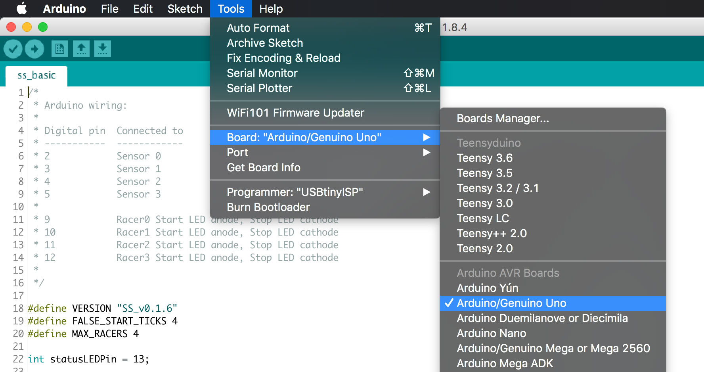

Installation
In order to use the latest version of SilverSprints, you will need to update the OpenSprints box. Inside the downloaded zip file, there should be a folder called "Arduino", this is the code we'll be using to update.
Updating Hardware
-
Download the free Arduino IDE software from here: https://www.arduino.cc/en/Main/Software
In the downloaded SilverSprints zip file, there is an
Arduinofolder that contains the code we'll be updating. Open the file inss_basic.inoin Arduino. -
Make sure you have selected the correct board from the Tools menu. In almost all cases, this will be
Arduino/Genuino Uno.
-
Next, we'll make sure we have the correct port selected. On Mac, it will be called something like
/dev/tty.usbserialand on Windows you'll see something similar toCOM3. -
Now press the upload button located in the top left.
If all went well, you should see a message letting you know the board has been updated. That's it! It it didn't work, double check steps 2 and 3.